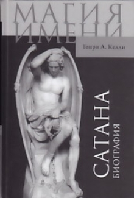

Warrax
Ex libris de Satanae II:
Келли Г.А., Сатана. Биография
Генри
Ансгар Келли, «Сатана: Биография»
Москва, Издательство «Весь Мир», 2011, 328 стр.
Перевод с англ. О. Когтевой, Л. Якушиной
Тираж 2000 экз., твердая обложка
«Книга почетного профессора Университета Калифорнии (Лос-Анджелес, США) опубликована в издательстве Cambridge University Press в 2006 г. Главной задачей своего исследования он считает прояснение “обличья” Сатаны, которое можно найти в Ветхом Завете, его греческом переводе (Септуагинте), в неканонических книгах и в «Свитках Мертвого моря», а также в Новом Завете (что составляет «первоначальную биографию»), и отделение этого «обличья» от его переосмысления в трудах Отцов Церкви («новая биография»). Келли показывает, каким складывался образ Сатаны в литературе, драматургии и изобразительном искусстве, дает обзор веры или неверия в его существование вплоть до наших дней. Тонкий текстологический анализ, увлекательный исследовательский поиск и ясность изложения делают книгу интересной широкому кругу читателей. Книг является плодом многолетних исследований автора и может служить справочником по одной из вечных тем истории религии и культуры. На русский язык книга переведена впервые».
Высокопрофессиональная работа. Келли тщательно, используя оригинальные первоисточники, восстанавливает «биографию» Сатаны, начиная с древнееврейских мифов и заканчивая современной литературой. Напомнило работу Руслана Хазарзара «Сын человеческий» про Христа: точно такое же непредвзятое, научное исследование, с великолепным владением материалом.
В книге показано, как образ Сатаны менялся со временем. Особую ценность работе придает использование не только канонических догматических источников, но и апокрифических евангелий и др.: исследуется именно «биография» Сатаны, а не официально-церковная точка зрения, которая является лишь частью использованного материала.
Работа и так была бы весьма ценной для любого, интересующегося темой, но в книге попутно задеваются и другие очень полезные темы. Скажем, четко показано, что некогда христианство во время формирования догматики «трансформировалась в зороастрийскую систему. Основным различием между персидским дуализмом и новым христианским дуализмом стало то, что если в первом из них Злое Начало как таковое существовало всегда, то в посторигеновском христианстве Доброе Начало само создало Злое Начало!».
Затрагивается тема Света и Тьмы — мне особенно понравилось указание на то, что Тьма четко ассоциируется с неверием; да, Свет — это именно вера, а не разум.
Разбирается много нюансов — так, четко показано, что Эдемский змей к Сатане отношения не имеет, восстание ангелов — весьма поздняя легенда, и т.д. Много интересного. Есть и подборка иллюстраций «как изображали Дьявола».
Когда дочитал исследование, то стало даже как-то обидно, почему книги такого уровня не пишут сатанисты.
Стоит ли читать? Обязательно, если хоть как-то интересуетесь темой. Христианам тоже очень полезно.